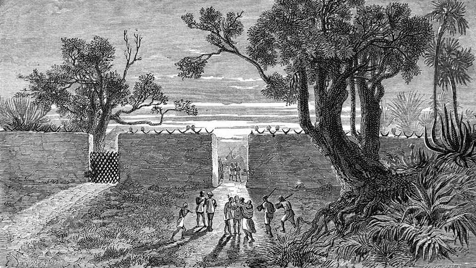
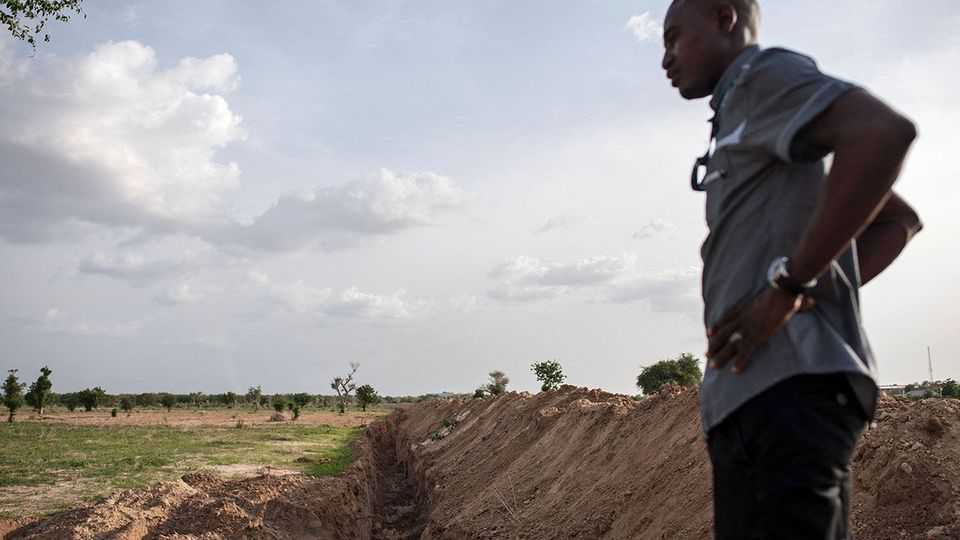

Medieval-style fortifications are back in the Sahel
Newly walled towns are a sign of shrivelling state authority
June 25th 2026

Not much remains today of the walls, ramparts and moats that once surrounded Benin City in southern Nigeria. Yet for centuries these giant earthworks—second in length only to China’s Great Wall among man-made structures—bespoke a mighty civilisation whose authority extended across much of west Africa. By the standards of pre-colonial Africa, the Benin state was exceptionally strong: erecting the wall in a single dry season might have required mobilising as many as 5,000 men, each working ten hours a day. But as the empire withered and eventually succumbed to British invaders in the late 19th century, most of the earthworks vanished. So did those of many other fortified towns across west Africa.
Now they are returning. Since the mid-2010s, as jihadist insurgencies have spread across northern Nigeria and the Sahel, defensive earthworks have risen up around towns and cities. Many are so extensive they are clearly visible in satellite images. According to new research by Olivier Walther and Steven Radil, geographers at the University of Florida, all urban centres in north-east Nigeria with populations of more than 10,000 are now secured by trenches. Most big towns there and in the Lake Chad basin are surrounded by sand berms up to three metres high.

Unlike those of the former Benin empire, the new walls and moats are a sign of state weakness. In Nigeria, the army began digging trenches with the help of the American government shortly after the notorious “Chibok Girls” kidnapping by jihadists in 2014. The goal, says an American contractor involved in the initiative, was to protect civilians and “hold the line” against jihadist advances. Militants in the Sahel typically carry out attacks using light vehicles such as motorcycles or pickup trucks. Trenches and berms are a simple, low-tech way to slow them down.
Governments in Burkina Faso, Cameroon, Chad, Mali and Niger have followed suit. In 2024 at least 133 civilians were killed in Burkina Faso by jihadists while they were digging a trench around the town of Barsalogho on the orders of the armed forces. It is not just cities and towns. Attracted to what they see as a quick fix for security threats, governments in the region are fortifying all sorts of assets under their control, from power stations and government offices to hospitals and schools. Togo has dug over 36km of trenches along parts of its borders with Burkina Faso and Benin to prevent militants crossing.

In the long run, the effect may be to cede vast swathes of the countryside to the insurgents. Mr Walther notes that large parts of the Sahel now resemble an “archipelago of secure islands surrounded by an insecure sea”. For much of its history Africa was characterised by weak states struggling to control scattered, mobile populations. The landscape of the Sahel today looks increasingly like a snapshot from its past. ■
Sign up to the Analysing Africa, a weekly newsletter that keeps you in the loop about the world’s youngest—and least understood—continent.